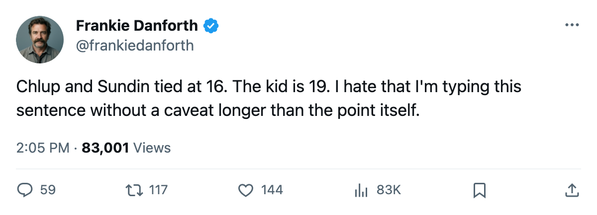

TOR
TORDANFORTH: The 19-year-old who tied the 99, and the 5 games that'll tell me if I was wrong
Chlup has 16 points in 22 games. Sundin has 16 points in 22 games. I have been asking for this for 18 months and I am not ready to stop asking.
Code Yellow

Petr Chlup87 has 16 points in 22 games.  Mats Sundin92 has 16 points in 22 games. Chlup is 19. Sundin is 34. One of them costs $2.34M on a 1-year deal and the other costs $8.40M with 4 years left. The 19-year-old plays 20.6 minutes a night, centers the second line, kills penalties on the first unit, and has tied his captain in the points column with 3 more shots on the captain's line.
Mats Sundin92 has 16 points in 22 games. Chlup is 19. Sundin is 34. One of them costs $2.34M on a 1-year deal and the other costs $8.40M with 4 years left. The 19-year-old plays 20.6 minutes a night, centers the second line, kills penalties on the first unit, and has tied his captain in the points column with 3 more shots on the captain's line.
I have been writing "second centre problem" since December 2004. I wrote it through the Spezza experiments, through the Richards trade that gave us a 3rd-line man at 12.6 minutes a night, through the offseason when everyone said the prospect would come in and I said prove it. I said it with the contempt of a man who has been lied to by a 19-year-old before.
Chlup has not lied yet. 16 points, 5 goals, 11 assists, 20.6 minutes, and a +8 on the Development Index that puts him in the same sentence as  Rostislav Klesla87 and
Rostislav Klesla87 and  Stanislav Chistov87. The line he centers,
Stanislav Chistov87. The line he centers,  Rick Nash85 and
Rick Nash85 and  Maxim Afinogenov86 on the wings, has 45 points between the three of them. The first line, Sundin,
Maxim Afinogenov86 on the wings, has 45 points between the three of them. The first line, Sundin,  Alexander Mogilny89, Chistov, has 39. The second line is outscoring the first.
Alexander Mogilny89, Chistov, has 39. The second line is outscoring the first.
22 games is not a season. 22 games is not a trade deadline. 22 games is not April, when the other team's game plan is built around stopping you and you need a man who can carry a 200-foot shift in front of a hostile crowd at Boston. Chlup turns 20 in January. He is playing on a 1-year deal at $2.34M. One bad month and the front office gets the phone call about whether he's tradable.
The next 5 games decide whether I keep typing those two words.  Philadelphia Flyers comes to Toronto on Thursday with 9 wins and 8 losses and a 2-game slide.
Philadelphia Flyers comes to Toronto on Thursday with 9 wins and 8 losses and a 2-game slide.  Buffalo Sabres arrives the next night at 4-11-2. Then
Buffalo Sabres arrives the next night at 4-11-2. Then  Tampa Bay Lightning (8-6-5),
Tampa Bay Lightning (8-6-5),  New York Islanders (9-8-3, on a 4-game slide), and
New York Islanders (9-8-3, on a 4-game slide), and  New Jersey Devils (12-3-1). Three of those five are below .500. Two are on losing streaks. This is where a team with a 5-point lead over
New Jersey Devils (12-3-1). Three of those five are below .500. Two are on losing streaks. This is where a team with a 5-point lead over  Boston Bruins and 2 games in hand is supposed to pull away.
Boston Bruins and 2 games in hand is supposed to pull away.
Boston owns the head-to-head, 2-0-0. The Bruins play 3 in 6 days starting Saturday against  Montreal Canadiens, and their 3 remaining meetings with Toronto start January 7. I have seen the lead evaporate on less. I have seen the 2 games in hand become 0 games in hand in three weeks when the schedule gets ugly.
Montreal Canadiens, and their 3 remaining meetings with Toronto start January 7. I have seen the lead evaporate on less. I have seen the 2 games in hand become 0 games in hand in three weeks when the schedule gets ugly.
But Chlup hasn't given me the ugly yet. 5 goals, 11 assists, 20.6 minutes, 19 years old. If the second line carries this through the next 5, I will type the sentence "the second-centre problem may be solved." I will make it sound reluctant. I will make sure you know I earned the reluctance.
The 19-year-old will still have 48 more games to prove me wrong. I'll be at the glass for every one of them.
